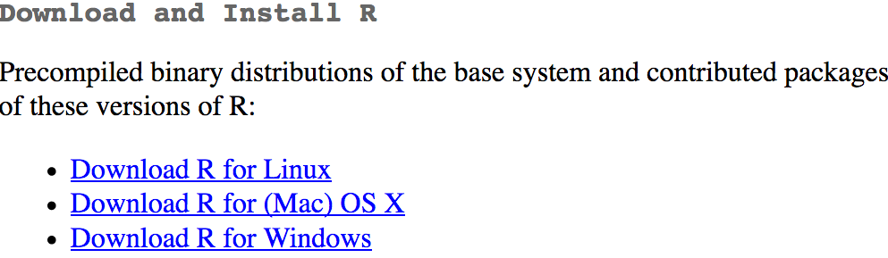
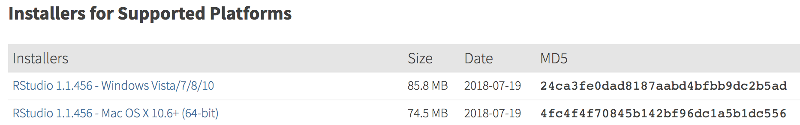
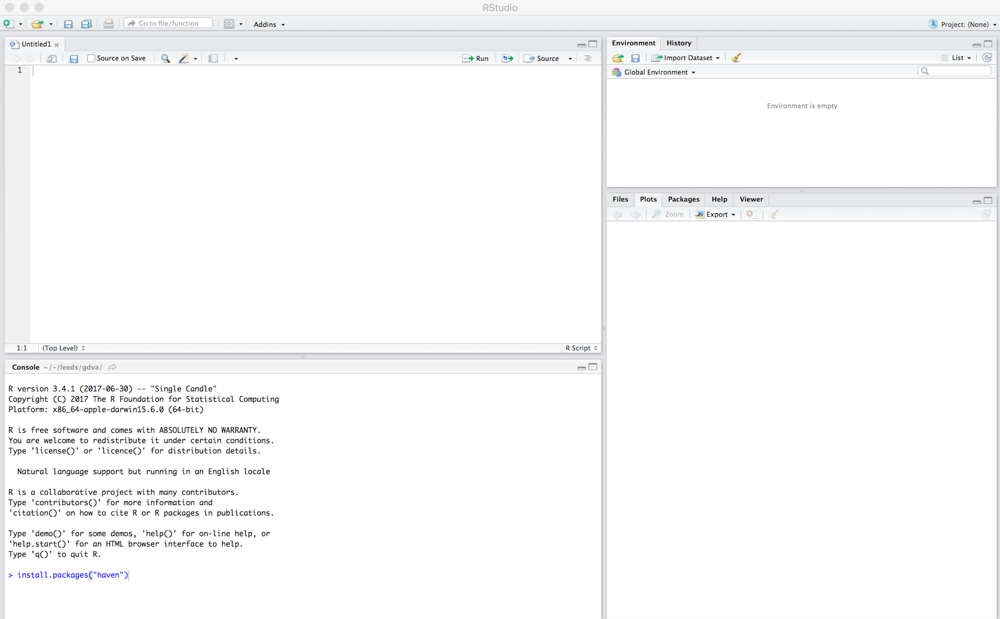

R
What is R?
R is a free, open statistical programming language and environment. Released as open source software as part of a research project in 1995, for some time R was the preserve of academics. From 2010s onwards, with the advent of Big Data and new sub-disciplines such as Data Science, R enjoyed rapid growth and is used increasingly outside of academia, by organisations such as Google [example], Facebook [example], Twitter [example], New York Times [example] and many more.
Rather than simply a free alternative to proprietary statistical analysis software such as SPSS, R is a programming language in and of itself and can be used for:
Data Visualization design: 2019 GE Vis
Developing interactive (visualization) software: UpSet
As a GIS: Geocomp with R
As a word processor / web publisher: R Markdown
Why R?
Free, open-source with an active community
There are many benefits that come from being fully open-source, with a critical mass of users.
Firstly, there is a burgeoning array of online forums, tutorials and code examples through which to learn R. StackOverflow is a particularly useful resource for answering more individual questions.
Second, with such a large community, there are numerous expert R users who themselves contribute by developing libraries or packagesAn R package is a bundle of code, data and documentation, usually hosted centrally on the CRAN (Comprehensive R Archive Network). A particularly important, though very recent, set of packages is the tidyverse: a set of libraries which share a common underlying philosophy, syntax and documentation.
that extend its use.
R supports modern data analysis workflows
Reproducible research is the idea that data analyses, and more generally, scientific claims, are published with their data and software code so that others may verify the findings and build upon them.
– Roger Peng, Jeff Leek and Brian Caffo
In recent years there has been much introspection around how science works – around how statistical claims are made from reasoning over evidence. This came on the back of, amongst other things, a high profile paper published in Science, which found that of 100 recent peer-reviewed psychology experiments, the findings of only 39 could be replicated. The upshot is that researchers must now make every possible effort to make their work transparent. In this setting, traditional data analysis software that support point-and-click interaction is unhelpful; it would be tedious to make notes describing all interactions with, for example, SPSS. As a declarative programming language, however, it is very easy to provide such a provenance trail for your workflows in R since this necessarily exists in your analysis scripts.
Concerns around the reproducibility crisis are not simply a function of transparency in methodology and research design. Rather, they relate to a culture and incentive structure whereby scientific claims are conferred with authority when reported within the (slightly backwards) logic of Null Hypothesis Significance Testing (NHST) and p-values. For an accessible read on the phenomenon of p-hacking (with interactive graphic) see this article from the excellent FiveThirtyEight website. Again, the upshot of all this introspection is a rethinking of the way in which Statistics is taught in schools and universities, with greater emphasis on understanding through computational approaches rather than traditional equations, formulas and probability tables. Where does R fit within this? Simply put: R is far better placed than traditional software tools and point-and-click paradigms for supporting computational approaches to statistics – with a set of methods and libraries for performing simulations and permutation-based tests.
R and RStudio on your machine
Install R
First you need to install R itself.
- Go to the CRAN (Collective R Archive Network) website: https://cran.r-project.org/
- Click on “Download R for
XXX”, whereXXXis either Mac or Windows
:- If you use macOS, scroll down to the first
.pkgfile in the list of files and download it. - If you use Windows, click “base” (or click on the bolded “install R for the first time” link) and download it.
- If you use macOS, scroll down to the first
- Double click on the downloaded file (check your
Downloadsfolder). Click yes through all the prompts to install like any other program.
Install RStudio
Next, you need to install RStudio, the graphical user interface (GUI) for R. Once R and RStudio are installed, you will work entirely via RStudio – RStudio automatically calls R and so do not have to interact with R directly.
Go to the free download location on RStudio’s website: https://www.rstudio.com/products/rstudio/download/#download
Select the installer that corresponds with your computer’s operating system (Windows or macOS)
Double click on the downloaded file (again, check your
Downloadsfolder). Click yes through all the prompts to install like any other program.
Double click on RStudio to run it (check your applications folder or start menu).
Get familiar with the R and RStudio environment
Open RStudio
Open RStudio. Click File -> New File -> R Script. You should see a set of windows roughly similar to those in the figure to the right.
The top left pane is the Code Editor. This is where you’ll write, organise and comment R code for execution. Code snippets can be executed using Run at the top of the RStudio pane or typing cmd R (Mac) ctr R (Windows). Below this, in the bottom left pane is the R Console, in which you write and execute commands directly. To the top right is a pane with the tabs Environment and History. The purpose of these will soon be clear. In the bottom right is a pane for navigating through project directories (Files), displaying Plots, details of installed and loaded Packages and documentation on the functions and packages you’ll use (Help).
Enter some console commands
As discussed, R can be used in many different ways for performing modern data analysis (as demonstrated in this module). It is also possible to simply use R as a calculator by typing commands directly into the Console. Type the commands contained in the code block below into your R Console. You’ll create a variable (x) and assign it a value using the assignment operator (<-), then perform some simple statistical calculations using functions that are held within the (base) packageThe base package is core and native to R. Unlike all other packages, it does not need to be installed and called explicitly. One means of checking the package to which a function you are using belongs is to call the help command (?) on that function: e.g. ?mean().
.
# Create variable and assign a value.
x <- 4
# Perform some calculations using R as a calculator.
x_2 <- x^2
# Perform some calculations using functions that form baseR.
x_root <- sqrt(x_2)Further reading
There are numerous books, tutorials and blogs introducing R as an environment for applied data analysis. Detailed below are resources that are particularly useful primers for this session.
Hadley Wickham and Garrett Grolemund’sWickham and Grolemund (2017)
R for Data Science: the primer for doing data analysis with R. Hadley and Garret present their thesis of the data science workflow and illustrate how R and packages that form thetidyversesupport this. It is both accessible and coherent and is highly recommended.Robin Lovelace et al.’sLovelace, Nowosad, and Muenchow (2019)
Geocomputation with R. This book comprehensively introduces spatial data handling in R. It is a great complement to R for Data Science in that it draws on brand new libraries that supporttidyverse-style operations on spatial data.
References
Lovelace, Robin, Jakub Nowosad, and Jannes Muenchow. 2019. Geocomputation with R. London, UK: CRC Press. https://geocompr.robinlovelace.net.
Wickham, Hadley, and Garrett Grolemund. 2017. R for Data Science: Import, Tidy, Transform, Visualize, and Model Data. Sebastopol, California: O’Reilly Media. http://r4ds.had.co.nz/.